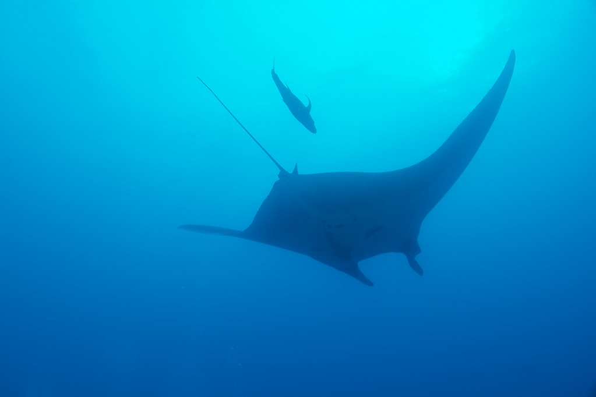

Socorro Islands
Index
Previous
152 of 152
Rating: 3
Name: Socorro 2010-04-23 07-36-42
Date: 4/23/10 7:36:42 AM MDT
Aperture: ƒ/6.3
Shutter Speed: 1/100
Exposure Bias: 0 ev
ISO: ISO 200
Focal Length (35mm): 18.0mm
Focal Length: 12mm
Pixel Size: 3634 × 2422 (8.8 MP)
File Name: Socorro 2010-04-23 07-36-42.NEF
File Size: 15.11 MB
Camera Model: NIKON D200
Project Path: Socorro
Copyright Notice: Copyright 2010, Gregg Kellogg
